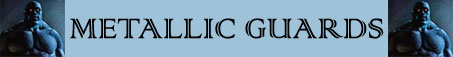
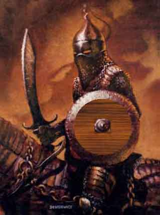

|
 |
Ambiente/Habitat | Qualsiasi |
| Frequenza | Rare | |
| Organizzazione | Pattuglia | |
| Periodo di Attività | Any | |
| Dieta | Nessuno | |
| Intelligenza | Low intelligence (5) | |
| Punti Combattimento | 6 Punti Combattimento | |
| Tesoro | Nessuno | |
| Allineamento Dominante | Lawful Evil | |
| Numero di Apparizione | 2d3+1 | |
| Classe Armatura | 4 [10 base, - 5 corazza, -1 scudo medio] | |
| Movimento | 6 esagoni | |
| Dadi Vita | 3 (21 punti ferita) | |
| Thac0 | 17 | |
| Numero di Attacchi | Scimitarra | |
| Danni | 1d8+2 (taglio) | |
| Poteri Offensivi | Istinto Predatorio; | |
| Poteri Difensivi | Sangue Acido; Immunità all'Acido; Immunità dei Costruiti; [7] Punti Ferita per Dado Vita; |
|
| Poteri Generici | Nessuno | |
| Vulnerabilità | Nessuna | |
| Resistenza alla Magia | Nessuna | |
| Sensi | Vista Comune | |
| Dimensioni | Medium (1,80 m. larghi) | |
| Morale | Fearless (20) | |
| Valore in Punti Esperienza | 250 |
| MODIFICATORI AI TIRI SALVEZZA | |||||||||||||||||||||||
| COR | 0 | 49 | ENV | 0 | 55 | MAG | 0 | 62 | MAL | 0 | 47 | MEN | 0 | 60 | RIF | 0 | 54 | ROB | 0 | 53 | VEL | 0 | 49 |
Descrizione
La Guardia Metallica è un'altra terribile creatura che è possibile trovare nel Nordor ed è a servizio dei poteri oscuri che hanno fatto di quell'Impero devastato e distrutto il loro regno delle tenebre. Si tratta dei soldati del male, costruiti di basso grado che vanno in giro in pattuglie e seguono gli ordini del loro misterioso costruttore e padrone. Sebbene non possano mettere in difficoltà esperti avventurieri sono molto pericolosi per i personaggi meno preparati e sono molto fastidiosi da attaccare. Sono stati studiati appositamente come guardie senza scrupolo per sottomettere schiavi e poveri malcapitati. I loro movimenti sono meccanici e leggermente goffi, nessuna parte della loro corazza lascia intravederne il contenuto. Quando sono attivi le fessure dell'elmo emanano una delicata luce rossastra.
Combat
La Guardia Metallica combatte con una spada ricurva di fattura e forma che assomiglia ad una scimitarra. Il peso della lama è però maggiore di quello che si potrebbe intuire e ciò la rende inutilizzabile dalle creature viventi. Inoltre la Guardia metallica utilizza un piccolo scudo per difendersi dagli avversari.
ISTINTO PREDATORIO (Moderate Special Ability): La creatura possiede un forte istinto predatorio, per tale motivo costei riceve un bonus costante di +1 ai suoi tiri per colpire.
SANGUE ACIDO (Superior Special Ability): L'interno della Guardia Metallica è costituito da un materiale sconosciuto allo stesso tempo gommoso e spugnoso. Questo materiale è riempito con un potente acido. Ogni volta che la Guardia Metallica viene colpita e danneggiata con un colpo violento uno spruzzo di acido polverizzato si sparge attorno alla stessa provocando 1-3 danni da acido comune a tutte le creature viventi che si trovano in corpo a corpo con la Guardia.
IMMUNITA'
ALL'ACIDO (Typical
Ability): Il corpo della creatura è
immune ai danni, sia magici che naturali, prodotti tramite
l'acido (indipendentemente dalla tipologia di danno prodotto), per tale motivo la
stessa annullerà
tutti i danni prodotti utilizzando l'acido.
[7]
PUNTI FERITA
PER DADO VITA
(Moderate Special
Ability):
Questa creatura, invece che utilizzare il comune dado da otto, possiede un
ammontare fisso di punti ferita che è pari a 7 punti ferita per ogni dado vita.
LESSER COMBO - SANGUE ACIDO e IMMUNITA' ALL'ACIDO - Le due abilità costituiscono una combo in quanto la seconda difende le altre eventuali creature dello stesso tipo dagli spruzzi acidi prodotti con la prima abilità. In considerazione del danno ridotto che la prima abilità produrrebbe e dell'uso limitato della combinazione la stessa può essere considerata minore.
Habitat/Society
Create molto probabilmente dalla stessa malvagia entità che ha creato anche altre creature (vedi Cavaliere Nero) sono creature sono utilizzate come guardie speciali laddove occorre. Molto spesso accompagnano costruiti più potenti di cui rappresentano la scorta e si trovano sotto il loro controllo (Ombre Incappucciate e Cavalieri Neri). Anche queste creature possono viaggiare di notte in tutto il territorio del Nordor tramite i portali del male. I portali magici che l'entità creatrice utilizza per inviare i suoi sicari ed emissari laddove occorre. Il rituale necessario per la creazione delle Guardie Metalliche è sconosciuto ma gli studiosi di magia oramai sono sicuri del fatto che si tratta di un fortissimo rituale che unisce scienze magiche a poteri divini, inoltre l'utilizzo di oscura negromanzia sembra fondamentale. Voci, infine, raccontano che in ogni Guardia Metallica si trova racchiusa e intrappolata l'anima di un prode avventuriero morto dopo atroci e prolungate torture, questo fa si che molti ministri di culti appartenenti alla Fratellanza della Luce vogliano la distruzione di queste creature e l'applicazione del rito funebre sulle loro spoglie anche se non sono considerate creature viventi.
Ecology
Le Guardie Metalliche non sono creature naturali e non contribuiscono in alcun modo all'ecologia del mondo di Arelia.